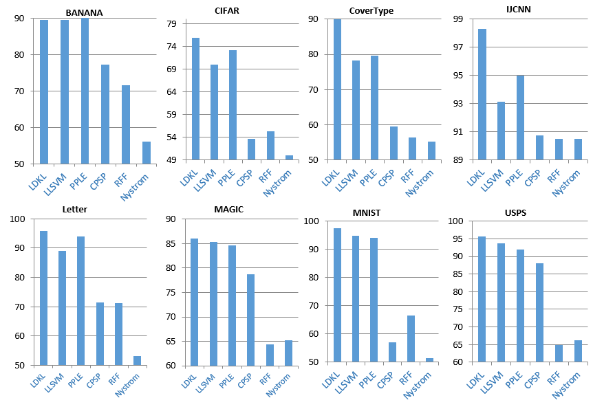
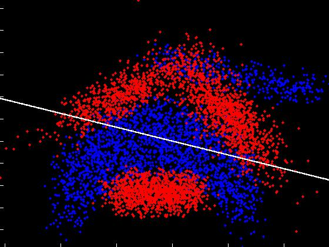
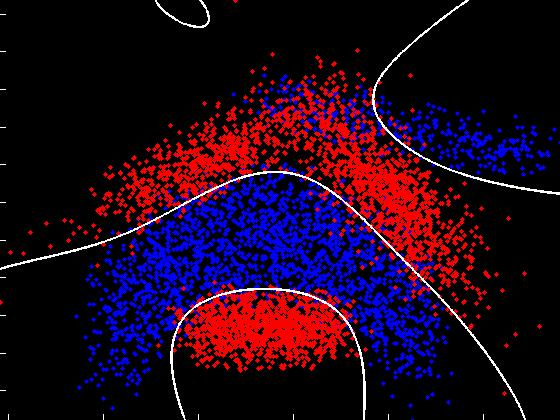
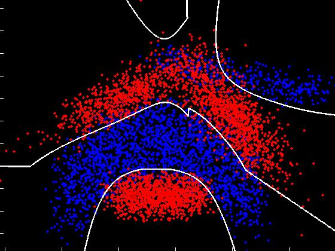
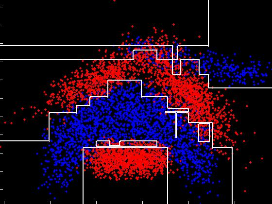
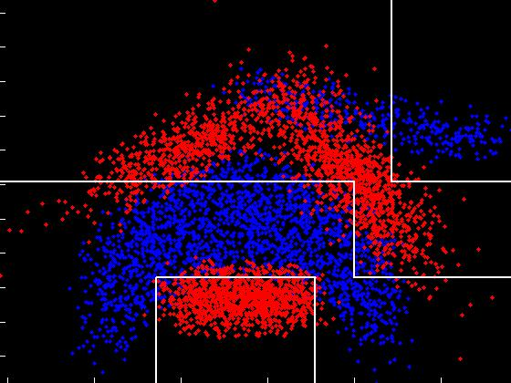
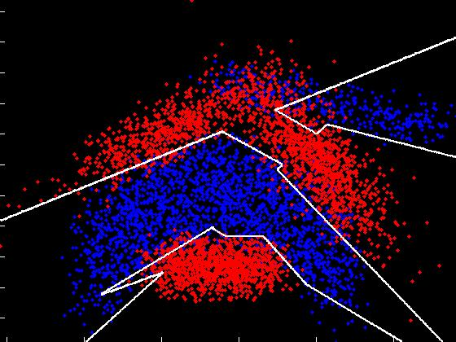

There has been an explosion in the size of modern day training sets with the advent of big data, cheap crowdsourcing and other techniques for gathering labelled information efficiently. This presents a significant challenge for non-linear SVMs since their cost of prediction can grow linearly with the size of the training set. Thus, even though non-linear SVMs have defined the state-of-the-art on multiple benchmark tasks, their use in real world applications remains limited.
We develop a Local Deep Kernel Learning (LDKL) technique [1] for efficient non-linear SVM prediction while maintaining classification accuracy above an acceptable threshold. LDKL learns a tree-based primal feature embedding which is high dimensional and sparse. Primal based classification decouples prediction costs from the number of support vectors and the size of the training set and LDKL’s tree-structured features efficiently encode non-linearities while speeding up prediction exponentially over the state-of-the-art. We develop routines for optimizing over the space of tree-structured features and efficiently scale to problems with more than half a million training points. Experiments on benchmark data sets reveal that LDKL can reduce prediction costs by more than three orders of magnitude in some cases with a moderate sacrifice in classification accuracy as compared to RBF-SVMs. Furthermore, LDKL can achieve better classification accuracies over leading methods for speeding up non-linear SVM prediction. In particular, LDKL is significantly better than kernel approximation techniques, such as Random Fourier Features [2,3] and Nyström [4,5], as it focusses on the decision boundary rather than modeling the kernel everywhere in space. LDKL can also be much faster than reduced set methods [6,7,8] as its tree-structured features can be computed in logarithmic time.
|
|
||||||||
| Data Set | Classification Accuracy (%) | Training Time (Minutes) | Prediction Time (Normalized) | Prediction Speedup over RBF-SVM | ||||
|---|---|---|---|---|---|---|---|---|
| Linear SVM | RBF-SVM | LDKL | RBF-SVM | LDKL | RBF-SVM | LDKL | ||
|
|
||||||||
| Banana | 59.18 | 90.30 | 89.53 | 0.00067 | 0.01017 | 1481.81 | 32.12 | 46.13 |
| CIFAR | 69.16 | 81.62 | 75.89 | 1283.68 | 0.278 | 38094.48 | 5.37 | 7081.60 |
| CoverType | 76.27 | 91.87 | 90.03 | 1369.96 | 7.99 | 229418 | 16.67 | 13757.95 |
| IJCNN | 92.20 | 98.68 | 98.31 | 0.45 | 0.09 | 6684.53 | 12.24 | 546.00 |
| Letter | 73.08 | 98.10 | 96.02 | 0.43 | 2.2 | 11020 | 33.29 | 330.98 |
| Magic04 | 79.08 | 86.65 | 86.19 | 0.17 | 0.047 | 9489.79 | 13.26 | 709.92 |
| MNIST | 87.90 | 97.45 | 97.28 | 39.12 | 1.376 | 12130.98 | 9.37 | 1294.42 |
| USPS | 83.65 | 96.96 | 95.63 | 0.75 | 0.09 | 3375 | 8.15 | 413.79 |
| RCV1 | 93.18 | - | 95.27 | - | 0.5 | - | 1.18 | - |
| MNIST 8Million | 79.24 | - | 98.01 | - | 65.21 | - | 1.16 | - |
|
Note that the actual prediction times have been normalized by dividing by a linear SVM's prediction time. This gives a sense of how much slower a method is as compared to a linear SVM and is somewhat robust to the actual hardware configuration on which the predictions were carried out. |
||||||||

Figure 1: Plots of prediction time versus prediction accuracy for state-of-the-art methods for speeding up non-linear SVM prediction. LDKL can have significantly higher classification accuracies as compared to the other methods for a given prediction cost. A method's curve not appearing in the plot for a given data set indicates that, for the given prediction cost range, the methods performance was worse than that of a linear SVM.

LDKL's classification accuracies are,by and large, within a percent or two of the RBF-SVM's while its prediction time can be two to four orders of magnitude lower. All our experiments were carried out on a single core of a 2.67 GHz Intel Xeon processor with 8GB of RAM.
Download the source code and Windows/Linux binaries
Please make sure that you have read the license agreement in LICENSE.doc/pdf before installing or using LDKL.
The code is in C++ and should compile on 32/64 bit Windows/Linux machines. The code also contains a Matlab interface. Please set "#define WINDOWS 1" in "include/Timer.h" when compiling on Windows machines and set the system PATH to include CL.EXE before running Makefile.bat (see the included README for detailed instructions). This code is made available as is for non-commercial research purposes. Please go through the EULA for more details.
Download the data sets used in the LDKL ICML 2013 paper
Please note that these data sets have been preprocessed in some cases (binarized, made zero mean and unit variance, etc.) so they might not match those available on the UCI/LibSVM page. In order to reproduce our results, please download and put all the data sets in the datasets folder. Compile LDKL and locate and run the ReproduceResult script. The learnt models and results will be stored in the Models and Results folders.
Please contact Suraj Jain and Manik Varma if you have any questions or feedback.
Training: The command
> LDKLTrain [Options] TrainingDataFile [ModelFile]
reads in training data from TrainingDataFile and saves the learnt LDKL model in ModelFile subject to the following options
Testing: The command
> LDKLPredict ModelFile TestDataFile [options]
applies the learnt LDKL classifier in ModelFile to the test data in TestFile and saves the predictions subject to the following options
A toy example has been included with the source code and binaries. Unpack the code and try
> ToyExample
after building the source or copying the binaries from the /bin/OS/ folder to the base folder, where OS is win32 or win64 or linux. This trains the LDKL classifier on the Banana data set. The learnt models will be saved in the Models folder and the results will be saved in the Results folder. You should expect an accuracy close to 89.2%.
|  Linear SVM (59.18%) |
 RBF-SVM (90.65%) |
 LDKL (89.4%) |
|---|---|---|
|  Fully grown decision tree (87.23%) |
 Pruned decision tree (84.23%) |
 Multi-feature decision tree (88.32%) |
Note that LDKL's decision boundary and classification accuracy on this data set are similar to that of the RBF-SVM. The decision tree results are not so good as typical decision trees are limited to piecewise linear decision boundaries.
| Manik's Home Page | | | Contact us | | | Privacy and Cookies | | | Terms of use | | | Trademarks | | | ©2013 Microsoft |